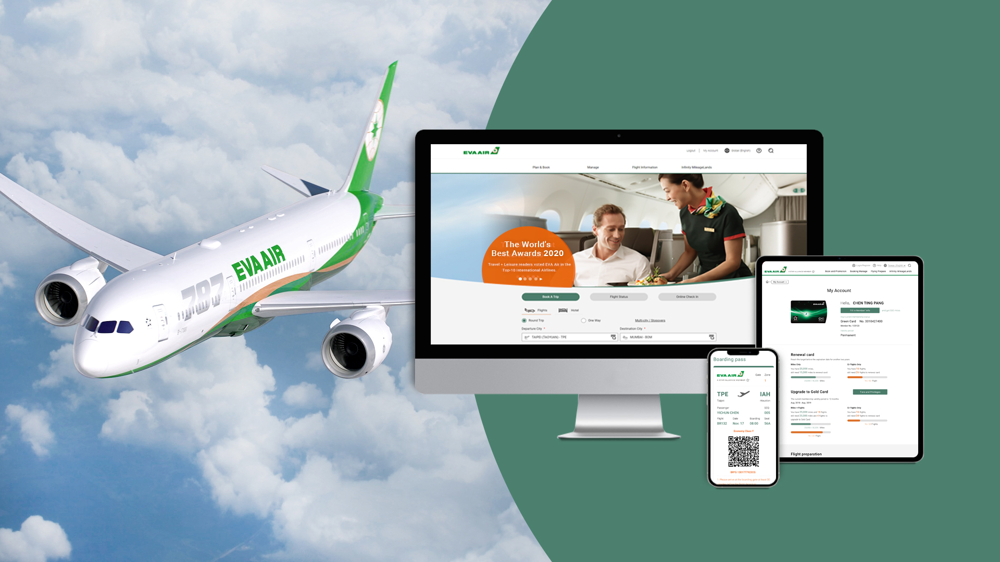

工作經歷
Isobar 安索帕
年為電通集團旗下提供設計、策略、創意和技術等多種數位行銷解決方案的代理商。任職期間接觸過許多不同類型的客戶和案件，累積了豐富的經驗，工作內容也隨年資累積逐漸轉換，從創意發想、活動設計到前端切版與UI設計師等多項職責，雖然職責不同，但是工作目標都是與團隊一起瞭解客戶需求和目標，並提供相應的解決方案。
-
2023-2019 UI Designer
負責網站和APP的設計和開發，參與研究分析、設計策略提案與制定 -
2019-2014 前端切版
進入Html CSS的世界，企業網站、網路活動、App切版 -
2014-2007 經驗設計師
創意活動發想、提案、製作各式媒體素材製作resize
橙網科技
2014-2007 經驗設計師
創意活動發想、提案、製作各式媒體素材製作resize
玉馬門創意設計有限公司
2007-2004 Web Designer
企業網頁提案設計切版、平面輸出設計完稿支援
作品們
-
EvaAirView Website
長榮航空
參前期使用者研究、規劃提案到UI設計的全方位改版專案，設計方向在半重塑品牌形象結合長榮航空的品牌理念，在版面設計上多圓弧與圓角暗示品牌文化中的服務與圓融，用色上也一改過去企業較深較沈穩的配色，打破之前太過穩重老派的品牌風格，並同時須符合WCAG規範，採用更現代化、活潑、有活力的風格來呈現，進一步傳達給使用者對長榮新的感受。
 -
FhtrustView Website
復華投信
重新設計官網架構，從舊有的架構中淘汰掉複雜、冗餘的內容，使得網站整體更加簡潔明瞭。新的UI設計，提升視覺效果，讓龐雜的金融資訊更加好閱讀。同時，也更加注重產品的介紹和說明，提供友善的產品資訊和投資試算UI，幫助客戶更容易理解復華投信的複雜產品和服務。

-
E.SUN SecuritiesView Website
玉山證券 大小網
在專案角色為前端切版，將設計師提供的設計轉化為可操作的HTML和CSS代碼，同時注重網站的可用性和使用者體驗，以便讓使用者可以輕鬆地使用和瀏覽網站。

-
UDN Shopping IPad版
客戶breif要為年長者製作符合使用體驗需求的Ipad版本(隨著RWD技術的演進，雖然此版本已不在現在)，製作過程中因專案時程必須快速開發，整個團隊採用paper prototype讓規劃、設計以及前端快速有共識並隨時Update與調整，是很有趣的過程，在品牌視覺設計上雖然只有製作Ipad版本，客戶很滿意進而後續客戶內部設計團隊沿用修改當時Web版。

-
Dantsu / Dan is Moving

-
Logitech / UE潮玩360